🧠 LLM skills for motion
Every animation skill,
one place to start.
14 agent skills for making animations: video, web motion, 3D, math and generative art.
12 of them were installed from skills.sh and actually used to make the outputs below. Each one gets its own page with the real output, copy-paste install, a ready prompt, a CLAUDE.md snippet and a hook.
🎁 Outputs: every skill, actually used
12 of these 14 skills were installed with npx skills add into .claude/skills/, their SKILL.md was followed, and this is what each one made. 🟡 and ⚪ mark the ones that couldn't run on the build machine; their pages say why. Click any tile for the source and the command to re-render it.
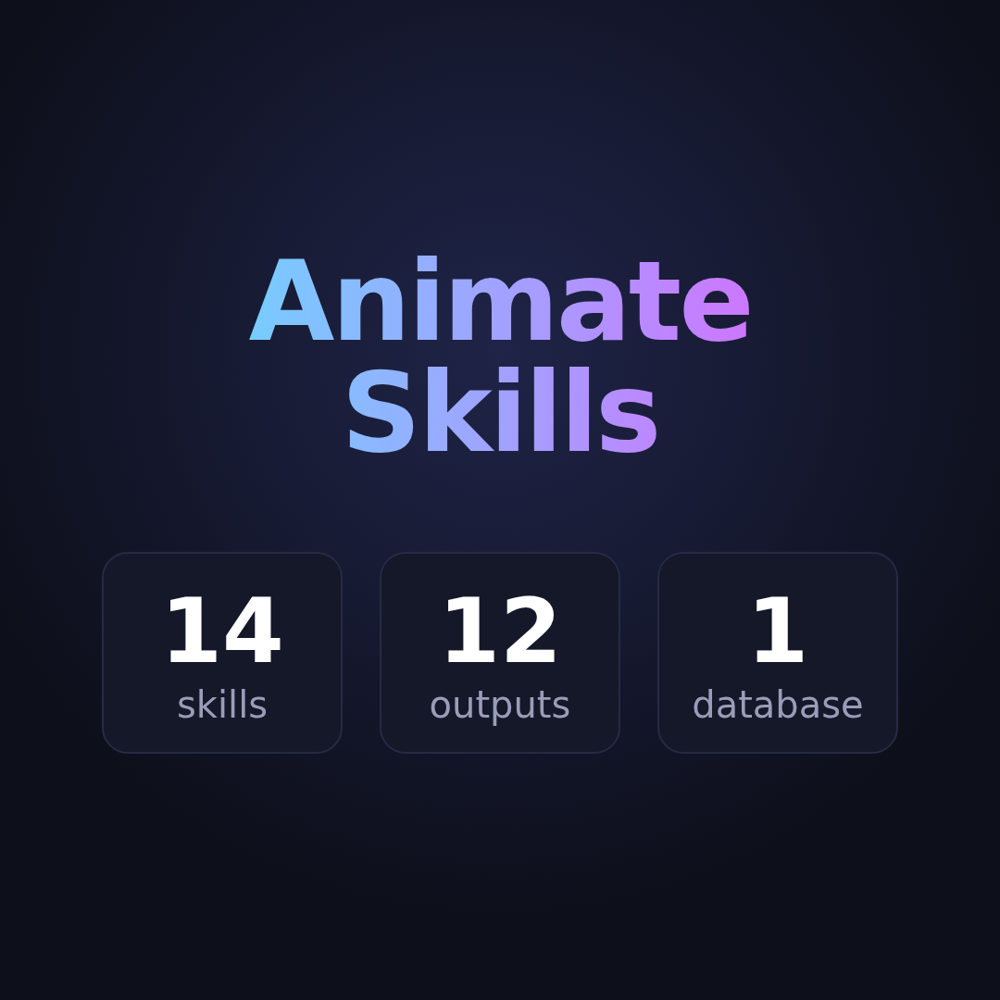
🎬 Remotion ✅ rendered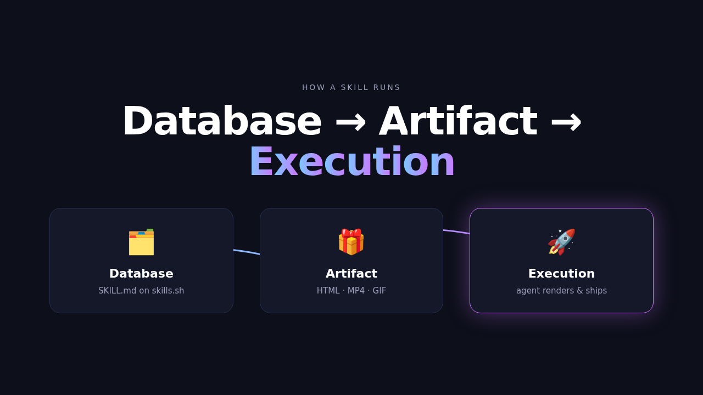
🌀 GSAP Web Animation ✅ built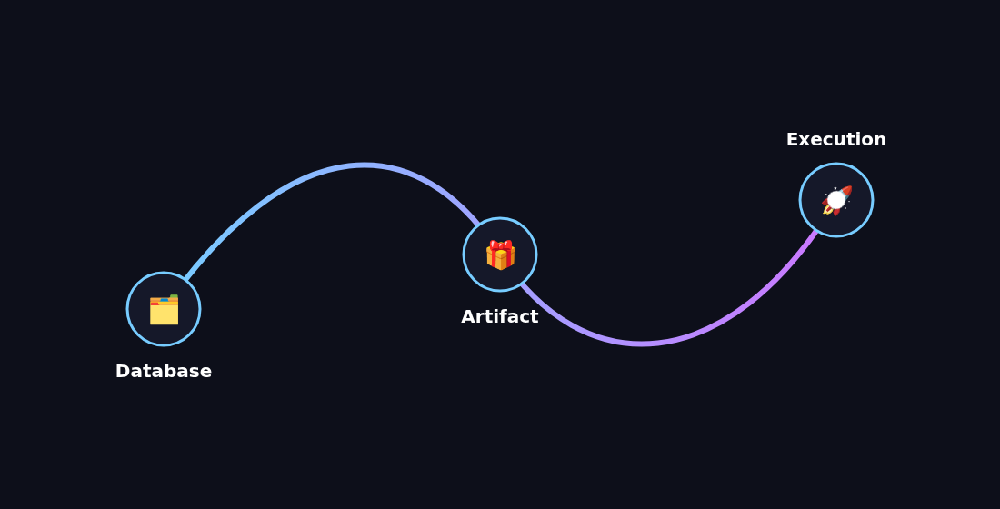
〰️ SVG Animation ✅ built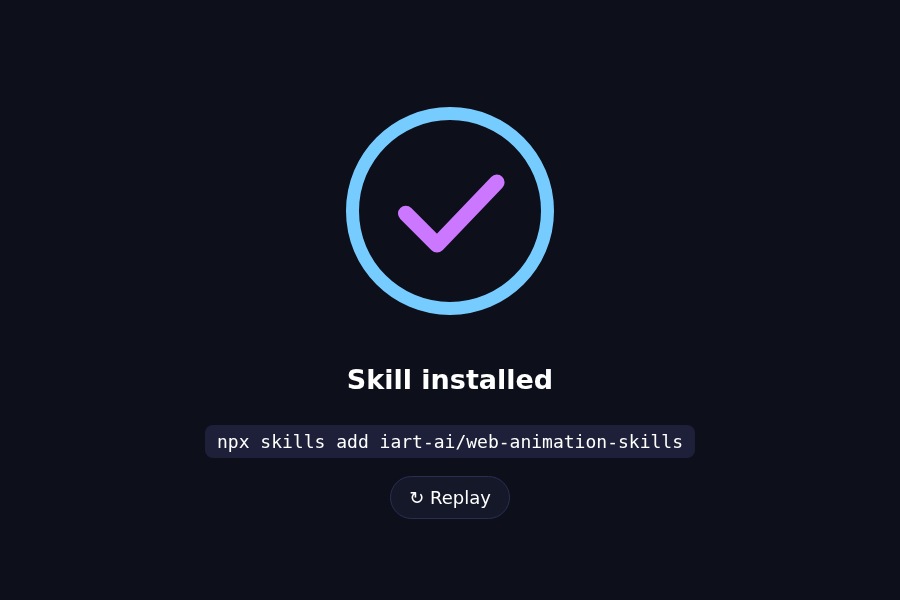
🫧 Lottie ✅ built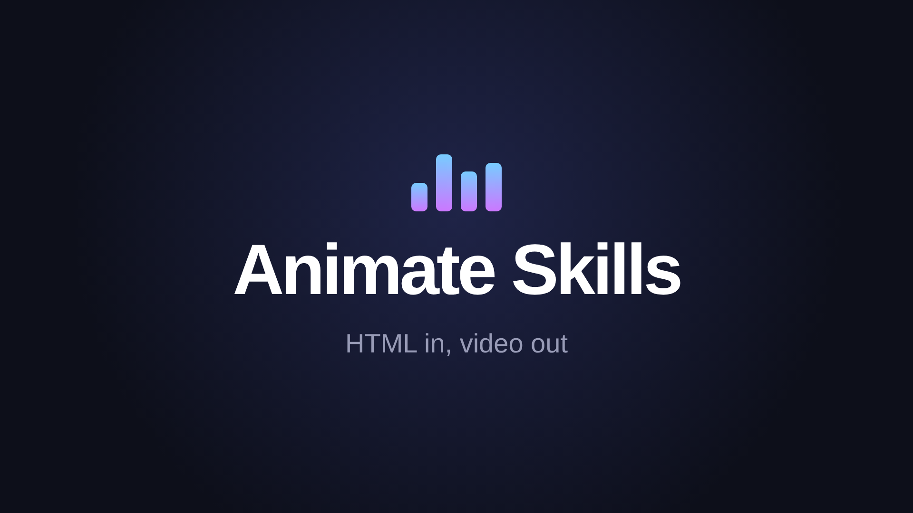
🎞️ HyperFrames ✅ rendered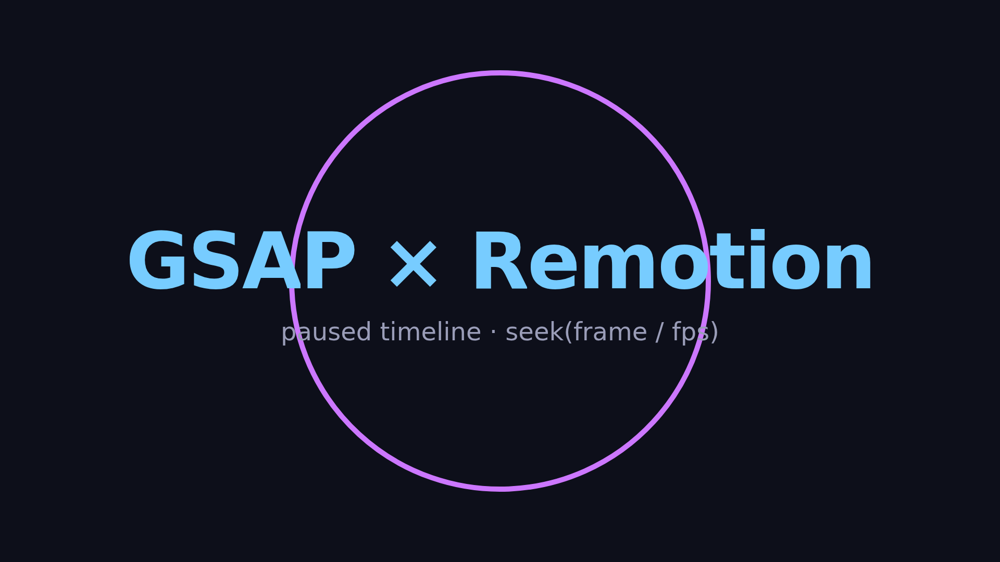
🧩 GSAP in Remotion ✅ rendered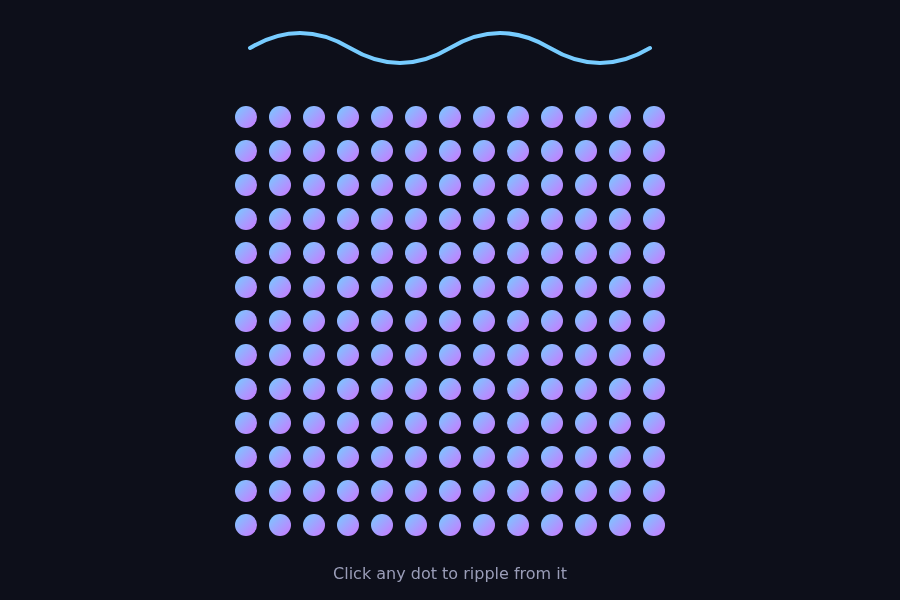
✨ Anime.js ✅ built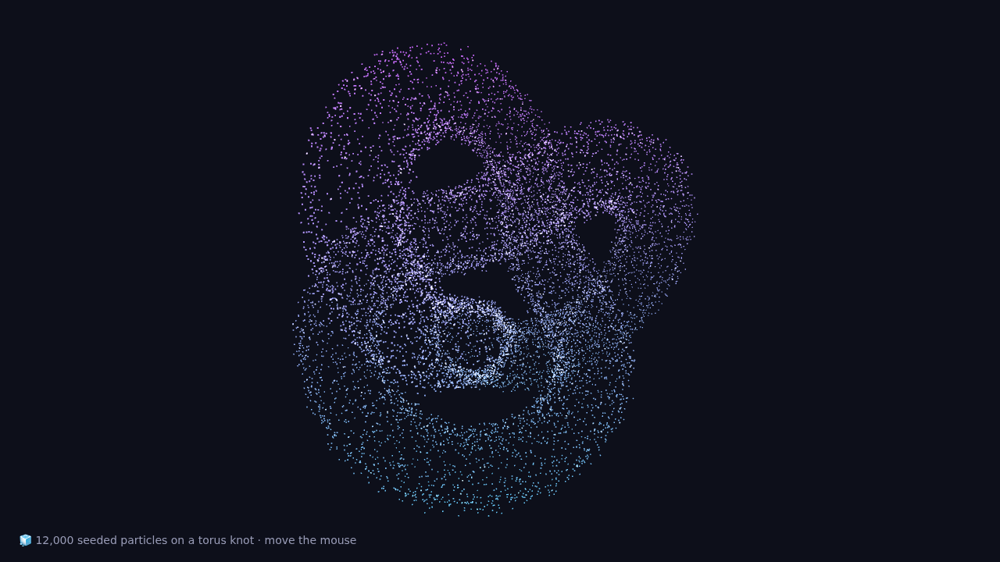
🧊 Three.js / WebGL ✅ built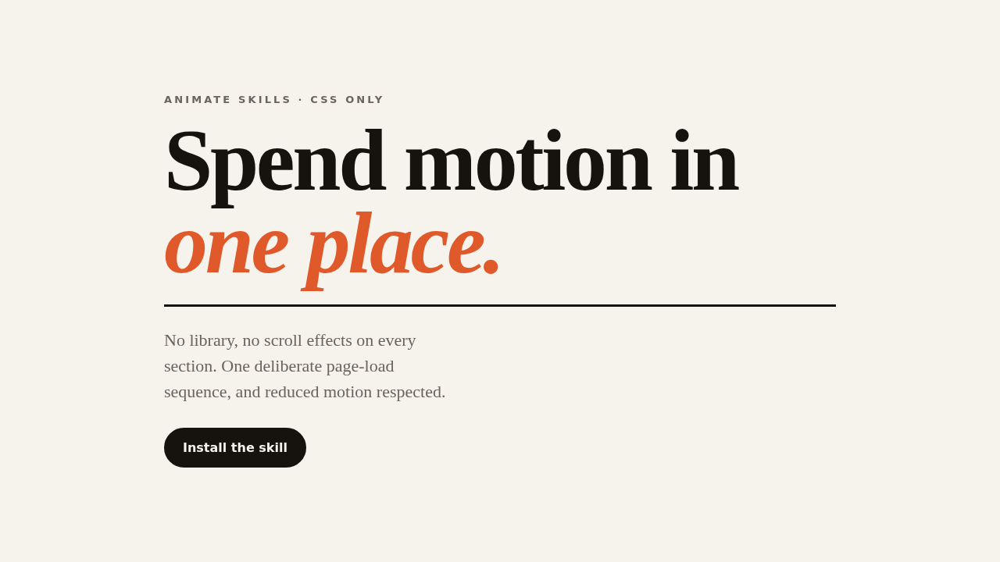
💅 CSS & Web Animations API ✅ built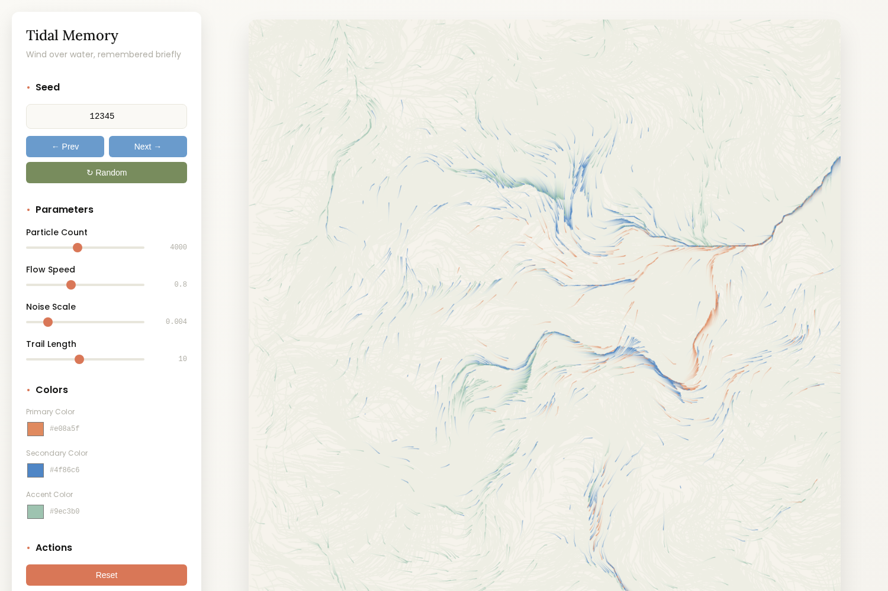
🎨 Algorithmic Art ✅ built🚀 Slack GIF Creator ✅ rendered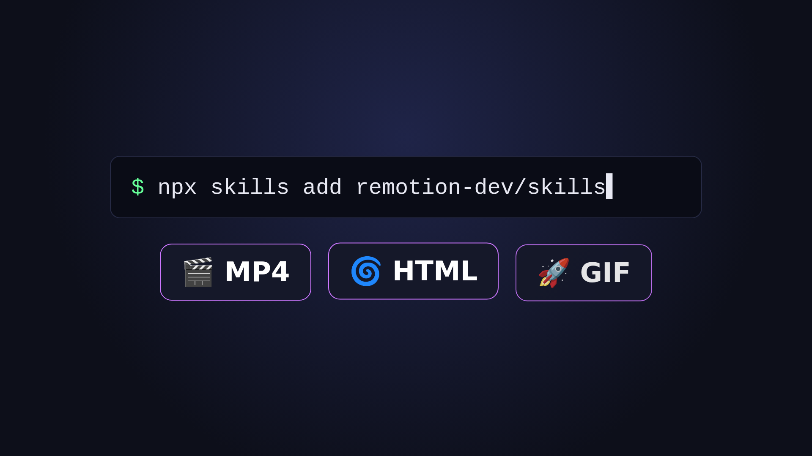
📽️ Animated Video (design kit) ✅ rendered🗂️ Database → 🎁 Artifact → 🚀 Execution
🗂️ Skills database
Skills are folders with a SKILL.md (name, description, instructions, scripts). Registries like skills.sh index them; npx skills add owner/repo copies them into .claude/skills/. This site's own database is skills/skills.json.
🎁 Artifact
What the skill produces: an MP4 from Remotion, HyperFrames or Manim; an HTML page from GSAP, Anime.js, CSS or Three.js; a GIF from slack-gif-creator. Here, build.py turns the database into this site.
🚀 Execution
Claude only reads each skill's short description until a prompt matches, then it loads the full SKILL.md, writes code, runs the renderer and hands back the artifact. Hooks check each step. This site runs on fly.io.
⚡ Quick start
Install every npx-installable skill at once:
npx skills add remotion-dev/skills -s remotion-best-practices
npx skills add iart-ai/web-animation-skills -s gsap-web
npx skills add iart-ai/web-animation-skills -s svg-animation
npx skills add iart-ai/web-animation-skills -s lottie-animation
npx skills add heygen-com/hyperframes -s hyperframes -s hyperframes-cli
npx skills add notedit/happy-skills -s gsap-animation
npx skills add avabillions2040/claudedesignskills-02-02-2026 -s animejs
npx skills add iart-ai/webgl-animation-skills -s threejs-animation
npx skills add anthropics/skills -s frontend-design
npx skills add anthropics/skills -s algorithmic-art
npx skills add anthropics/skills -s slack-gif-creator
npx skills add bluzir/claude-code-design -s animated-videoThen ask for an animation by naming the skill:
Use the remotion skill to make a 5s animated intro for this repo and render it to out/intro.mp4📚 All skills
| Skill | Artifact | Install | Registry |
|---|---|---|---|
| 🎬 Remotion | MP4 / WebM video | |
skills.sh ↗ |
| 🌀 GSAP Web Animation | Animated web page / component | |
skills.sh ↗ |
| 〰️ SVG Animation | Animated SVG in a page | |
skills.sh ↗ |
| 🫧 Lottie | Vector animation JSON embedded in a page or video | |
skills.sh ↗ |
| 🎞️ HyperFrames | MP4 rendered from HTML | |
skills.sh ↗ |
| 🧩 GSAP in Remotion | MP4 video | |
skills.sh ↗ |
| 📐 Manim | MP4 / GIF explainer | |
skills.sh ↗ |
| ✨ Anime.js | Animated web page / SVG | |
skills.sh ↗ |
| 🧊 Three.js / WebGL | Interactive 3D scene | |
skills.sh ↗ |
| 💅 CSS & Web Animations API | Animated UI with zero dependencies | |
skills.sh ↗ |
| 🎨 Algorithmic Art | Interactive generative-art HTML | |
skills.sh ↗ |
| 🚀 Slack GIF Creator | Animated GIF sized for Slack | |
skills.sh ↗ |
| 📽️ Animated Video (design kit) | Short animated video | |
skills.sh ↗ |
| 🎛️ Figma Motion (MCP) | Motion specs and exported video from Figma | |
skills.sh ↗ |
📄 CLAUDE.md
CLAUDE.md is loaded at the start of every session. Use it to tell Claude which animation skill to use and what a finished artifact looks like. This repo ships one; copy it as a starting point:
# CLAUDE.md — animate-skills
## Layout
- `skills/skills.json` — the skills database (one entry per animation skill). Edit this, then run `python3 build.py`.
- `.claude/skills/` — the real skills, installed with `npx skills add <repo> -s <skill>` (lockfile: `skills-lock.json`).
- `outputs/<slug>/` — what each skill produced (MP4, GIF, HTML), plus the source that made it.
- `remotion-video/` — Remotion project (SkillsIntro, GsapTitle, Storyboard compositions).
- `hyperframes-video/` — HyperFrames project (title card).
- `tools/capture.py` — Playwright screenshots of HTML outputs: `python3 tools/capture.py "page.html?t=1.5" out.png [--reduced]`.
- `build.py` → `site/` (served by nginx on fly.io via `Dockerfile` + `fly.toml`). Never edit `site/` or this file by hand.
## Skills
- Before writing any animation code, pick the matching skill from `skills/skills.json` and load it:
Remotion/HyperFrames/animated-video for video, gsap-web/animejs/svg-animation/frontend-design for web,
threejs-animation for 3D, algorithmic-art and slack-gif-creator for generative output.
- Follow each skill's "Deliver & verify" loop: freeze with `?t=N`, screenshot start/mid/end, then check both normal and reduced motion.
## Rules
- Animate transform and opacity; avoid layout-triggering properties.
- Respect `prefers-reduced-motion` in every artifact (tier it, don't just switch it off).
- No ffmpeg is installed system-wide. For HyperFrames renders, set `HYPERFRAMES_FFMPEG_PATH` (imageio-ffmpeg static build in `.pydeps/`)
and `HYPERFRAMES_FFPROBE_PATH` (Remotion's compositor `ffprobe`).
- After changing outputs: `python3 build.py`, commit, push, `fly deploy`.🪝 Hooks
Hooks are shell commands Claude Code runs at lifecycle events. SessionStart lists the available skills, PostToolUse checks each animation file after it's written, and Stop reports the artifacts that were produced. This is the same config as .claude/settings.json in this repo:
{
"hooks": {
"SessionStart": [
{
"hooks": [
{
"type": "command",
"command": "echo \"🎬 Animation skills: $(jq -r '[.[].slug]|join(\", \")' skills/skills.json)\""
}
]
}
],
"PostToolUse": [
{
"matcher": "Write|Edit",
"hooks": [
{
"type": "command",
"command": "f=$(jq -r '.tool_input.file_path // empty'); case \"$f\" in *.css|*.html) grep -q prefers-reduced-motion \"$f\" || echo \"⚠️ $f: no prefers-reduced-motion guard\" >&2 ;; esac; exit 0"
}
]
}
],
"Stop": [
{
"hooks": [
{
"type": "command",
"command": "ls -1 out/ 2>/dev/null | sed 's/^/🎁 artifact: /'"
}
]
}
]
}
}🛫 Deploy this site
python3 build.py && fly deploy